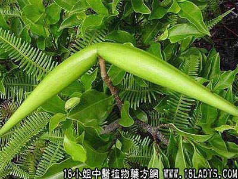

别名：羊角扭。
植物名：羊角柳。
生长环境：本品为直立或藤状灌木。多在荒山、干燥的山坡上、岩石隙上生长。
分布：广东到处皆有生长，广州附近常见。
入药部分：叶。
采集期：夏、秋。
自采地点：郊野山岗、丘陵地带。
性味：性寒味苦、有毒、不能服食，只作外用。
功能：止痒去毒。浸水能杀鱼、鹅、鸭及虫类。
主治、用量和用法：1、跌打：用鲜叶捣碎外敷，或用干叶研末，用酒调匀，煮热敷患处；2、刀伤：用干叶研末，撒布患处；3、疥癞：用全株适量，切碎，煎水洗患处，不能入口；4、杀蚊虫：将全株晒干，为末，撒布污水内。
参考资料：本品有大叶与小叶两种，都可入药。大叶的气味腥闷，用以浸水，为农药杀虫剂。
本文解释权归中药大全，本文地址：https://www.daquan.com/post/1615.html